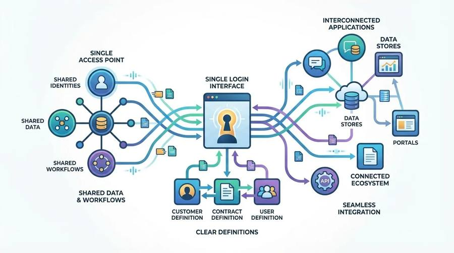

01
Website Development
We create modern, responsive, high-performance websites that build brand credibility and convert visitors into customers.
Websites, WhatsApp automation, and smart digital solutions that help businesses work smarter and grow faster.
Pycrafters helps businesses move from traditional processes to modern digital experiences — from a credible web presence to automated customer conversations and simpler day-to-day operations.
Make modern technology practical and accessible for every business we work with.
Businesses of every size running smoother, communicating faster and growing with confidence.
We listen first, plan the right solution, then build it around your goals.
Quality, clear communication and innovation in every project we deliver.
We create modern, responsive, high-performance websites that build brand credibility and convert visitors into customers.
Automate customer interactions and make business communication faster, smarter, and more efficient.
Reach your customers with organized WhatsApp communication and business updates using compliant messaging solutions.
Built on the official WhatsApp Business Platform and its messaging policies — opt-in based, never unsolicited or unlimited bulk messaging.
Explore Broadcasting →Transform traditional restaurant menus into modern digital experiences with easy-to-access QR menus.
Built around your business, not copied from a template.
Current tools and practices for fast, maintainable results.
Clear, intuitive experiences your customers enjoy using.
Tested, refined and delivered with care.
Less repetitive work, faster responses, happier customers.
Help after launch, as agreed for each project.
A clean, responsive interface that turns complex business data into clear screens customers and teams can use comfortably on any device.
A single sign-in that links customer records, contracts and portals, so teams work from the same data without jumping between tools.

Automated replies, lead capture and appointment booking on the WhatsApp Business Platform — enquiries answered in seconds and handed to your team when it matters.
A tailored application that brings a company’s tools, data and daily processes into one place, built around how the team actually works.
Understand business goals and requirements.
Plan the best digital solution.
Design, develop, test, and refine.
Deploy the solution and provide agreed support.
Explore the essentials here.
Less Manual Work.
More Business Growth.
Website development, WhatsApp Business automation, WhatsApp broadcasting using official platform capabilities, restaurant QR menu systems, and custom business solutions.
It depends on scope and content. Once we understand your requirements we’ll give you a realistic timeline.
Yes — automated replies, chatbots, lead collection, appointment flows and enquiry handling, built on the WhatsApp Business Platform.
Customers scan a QR code at the table and open your branded, mobile-friendly digital menu. You can update items, categories and images whenever needed.
Yes. Every solution is shaped around your business goals and workflow.
Send an enquiry with the form below or message us on WhatsApp, and we’ll get back to you to discuss your needs.
Yes. Support is provided as agreed for each project.